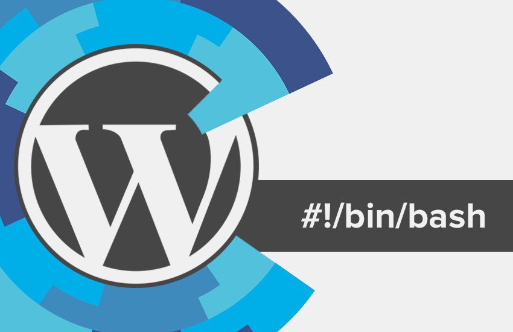

If you haven't noticed by now, here at Happy Medium, we like to make WordPress sites. The majority of our sites we create are done with WordPress. I don't think I'm alone when I say setting up a new project sucks. There are just so many things you have to remember to do and it seems like a never ending list. When I started at Happy Medium, I remember learning the process of setting up a new website, it was a lot to remember. It's not like it was terrible or anything, it was just a lot for a new employee to learn, as well as being pretty time consuming. If you read my last blog post, you may recall me saying that if I can make something more efficient, I am going to.
THE PROBLEM:
Let me give you an example. I have a task to set up a new WordPress site for "Client X". A typical workflow would look something like:
- Create a Git repository (Github / BitBucket)
- Setup a staging server
- Clone our base WordPress repo
- Clone our base plugin and theme
- Create a local database
- Run the, very simple, prepare script
That's just to name a few, but if you are like us, you have a laundry list of tasks to complete before actually have a new site up and running. For setting things up, we use a tool called wp-deploy. It's a framework for deploying WordPress sites using Capistrano, it's pretty amazing. Along with deployment, it also has WordPress included as a submodule. Now this is all fine and dandy, but it doesn't help a whole lot with the initial setup of a site.
THE SOLUTION:
I have been trying to learn more about bash scripting lately, so I figured this would be a great opportunity to learn a few things and make the team's lives a little easier. I started by breaking the setup process into small chunks and tackling them one by one. I started with the base prepare.sh script and expanded on it. The overall goal of the script was to make it so the user would only have to answer simple prompts and make as few decisions as possible.
CONFIGURATION
The first thing you have to do with a new wp-deploy project, is setup your configuration file. The simplest thing to do was to ask the user to input the project "slug". If we continue with our example, our slug would be "clientx". Once the user inputs the project slug, it's smooth sailing from their.
Note: Before running the script, you will need to add your credentials to the config.cfg file. This is used to keep your personal information in it's own file and separate from the script.
Tasks Completed:
- Clone the latest version of WordPress
- Update the configuration files with the project slug
- Create a local database
- Install Ruby dependencies
- Set up WordPress locally
BITBUCKET
Here at HM, we like to use Bitbucket for storing our projects. If you don't use version control, you should! For every project we need to create a new repository for storing the code. To make this work, I used BitBuckets API. After running a couple curl requests you will have a new repository with all your deployment keys. Read More on the BitBucket API.
Note: Your deployment keys will need to be added to the deployment.txt file.
Tasks Completed:
- Create a BitBucket repository using the project slug
- Add your deployment keys to the new repository
SERVERPILOT
We use ServerPilot for managing all our projects and servers. Just like our repository, we need to set up a new staging site. I took the same approach with this, using a couple curl requests got the job done. I found out that when you create a new ServerPilot app, it isn't instantly available to have a database added to it. To fix this I had to do a bit of text parsing in order to get the information I needed. I stored the app creation request in a variable and then parsed it to get the new app ID (used to create the database) and the action ID (used to check when the app was created). After the app was finished being created, I was able to add a database using the previously parsed app ID. Read more on the ServerPilot API.
Tasks Completed:
- Create a new ServerPilot application
- Create a new database for the application (randomly generated username and password)
- Update the database.yml with the database credentials
PLUGINS/THEMES
For most projects, we have our own plugin and theme that we have rolled up to help get things started and create consistency. Along with those we have a few plugins that find their way into almost every project as well. To get these set up, we would have to clone each one of them into their respective directories (plugins or themes). Additionally, our theme comes Grunt ready with a few helpful tasks (Sass compiling, minification, browser syncing, SVG spriting). In order for all these to work properly, we have to install our NPM packages and run our default Grunt task. Simple enough, just a couple commands and we're good to go!
Tasks Completed:
- Clone the needed plugins and themes
- Update the Gruntfile with our project slug
- Install NPM packages
- Run the initial Grunt task
MISCELLANEOUS
There is an amazing WordPress tool call WP-CLI and if you haven't heard of it, you should check it out. In short, it gives you a CLI for WordPress. Throughout the script, various tasks are completed using the CLI.
Tasks Completed:
- Activate plugins and theme
- Create a primary menu (Main Menu)
- Create a "Home" page and set it to the front page
- Create additional pages (the user is prompted to input a comma separated list of pages)
- Create a "Blog" page and set it to the page for posts
- Update rewrite structure and timezone
THE RESULT:
Where does this leave us?
We can now set up a new WordPress site with only a few keystrokes! This is amazing news. A task that use to take us anywhere from 15 - 30 minutes, now only takes us around 5 minutes. With all that extra time, you could easily get through another HM blog post!
Where do we go from here?
Obviously this script isn't going to fit into everybody's workflow perfectly, but I'm sure there are pieces that can be extracted and used on their own in a lot of cases. Finding that perfect setup is like finding a unicorn. Although there are always going to be ways to improve, hopefully this will at least help you head in that direction.
TL;DR:
Setting up a new WordPress site takes way too long, and there are too many things to remember to do. This script solves that problem.
What this script will do:
- Clone the latest version of WordPress
- Update the configuration files with the project slug
- Create a local database
- Install Ruby dependencies
- Set up WordPress locally
- Create a BitBucket repository using the project slug
- Add your deployment keys to the new repository
- Create a new ServerPilot application
- Create a new database for the application (randomly generated username and password)
- Update the database.yml with the database credentials
- Clone the needed plugins and themes
- Update the Gruntfile with our project slug
- Install NPM packages
- Run the initial Grunt task
- Activate plugins and theme
- Create a primary menu (Main Menu)
- Create a "Home" page and set it to the front page
- Create additional pages (the user is prompted to input a comma separated list of pages)
- Create a "Blog" page and set it to the page for posts
- Update rewrite structure and timezone
Think you have a better WordPress setup? Let me know in the comments. I'm always looking for ways to improve the way we do things here.
Feel free to head over to Github and grab the script.